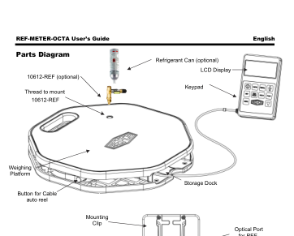

TP Inventaire Bouteilles — connecte-toi pour commencerse déconnecter
👤 Identifie-toi
À lire avant de commencer :
Tu vas peser et identifier une bouteille de fluide.
Chaque bouteille a un QR code. Scanne-le avec la caméra OU saisis son code.
Tu dois remplir les infos de la bouteille (marque, type…), peser, puis calculer la masse de fluide et son équivalent CO₂.
Les calculs sont à faire PAR TOI (pas de calculette intégrée). L'appli vérifiera ta réponse.
10 bouteilles au total. Tu passes à la suivante quand tu as fini une.
1 Quelle bouteille ?
Scanne le QR collé sur la bouteille OU tape son code manuellement.
0 / 10 bouteilles pesées
— ou —
Sécurité :
Bouteille toujours à la verticale — capuchon vissé pour le transport.
EPI : gants + lunettes obligatoires.
Ne jamais ouvrir un robinet à l'air libre.
📷 Vise le QR code
2 Identifie la bouteille
Regarde la bouteille. Lis l'étiquette et ce qui est gravé sur le collet.
3 Manomètre
Pas d'étiquette lisible.
Pose un jeu de manomètres sur la bouteille (BP).
Ouvre doucement le robinet. Attends la stabilisation.
Relève pression BP et température ambiante.
Avec la relation pression-température (mollier ou tablette fluide), identifie le fluide.
Referme le robinet et déconnecte avec précaution.
3 Pesée de la bouteille
⚖️ Apprends à utiliser TA balance :
Pose la balance à plat sur un sol stable, à l'abri des courants d'air.
Trouve le bouton ON / START (chaque modèle est différent — cherche-le !).
Attends l'affichage 0.000 kg stable. Si le plateau n'est pas parfaitement à zéro, appuie sur TARE pour faire la tare (mise à zéro).
Pose la bouteille centrée sur le plateau.
Attends la stabilisation (le chiffre ne bouge plus).
Note la valeur ci-dessous.
Retire la bouteille. Appuie sur OFF / STOP pour arrêter la balance avant de passer au suivant.
⚠ Ne pas confondre :la tare gravée sur la bouteille (masse de la bouteille vide, en kg — à recopier plus bas)
et faire la tare sur la balance (remettre l'affichage à zéro avant la pesée).
4 À toi de calculer
Tare—
Masse brute—
Fluide—
PRP—
📖 Les balances
Une balance électronique mesure une force (le poids) grâce à une jauge
de contrainte, puis la convertit en masse. En frigoriste, on s'en sert pour
peser les bouteilles de fluide (stock, charge, récupération) et vérifier
qu'une installation reçoit bien la quantité exacte prévue.
Séquence type (identique sur toutes les balances)
1 ON
2 TARE
3 POSER
4 LIRE
5 OFF
⚠ Attention aux unités.
Toutes ces balances peuvent afficher en kg (français) ou en lb / oz
(anglo-saxon). 1 lb = 0,454 kg — donc si la balance est en lb, ton relevé
est faux de plus de moitié ! Vérifie toujours que l'unité affichée est kg
avant de noter (bouton UNIT ou MODE).
⚠ Ne jamais dépasser la portée maximale indiquée sur
la balance (ex. 100 kg). Une bouteille de 27 L pleine peut peser 40 kg — vérifie
avant de poser.
Les 4 balances de l'atelier
Refco REF-METER-OCTA110 kg · 2 g · kg/lb/oz

La plus précise. Boutons ON/OFF, TARE, UNITS et ▲▼ sur le
boîtier déporté (LCD). Unités : appuyer plusieurs fois sur UNITS pour
cycler kg → lb → oz. Plateau octogonal. Piles : 4 × AAA.
Value TF-VES-100A100 kg · 5 g · ±0,05 %
Programmable (alarme sonore au poids cible). Plateau amovible 237×237 mm,
mallette ABS. Pile 9 V. Unités kg/lb par bouton dédié. TARE en
façade.
TIF 9030E100 kg (220 lb) · 10 g
Compacte, portable (sacoche à bandoulière). Trois boutons seulement :
ON/OFF, UNITS, ZERO (= TARE). Affiche kg, lb ou oz.
Pile 9 V. Résolution un peu plus grossière (10 g) : à éviter pour les petites
charges.
Teddington TF-B12005120 kg · 5 g · ±0,5 %
La plus grosse portée (120 kg). Plateau 230×230 mm amovible, module de contrôle
déporté (câble 1,80 m). Pile 9 V, extinction auto après 5 min — re-appuie
sur ON si l'affichage s'est éteint pendant que tu changeais de bouteille.
Unités kg/lb/oz.
Sego SCL 100 kg (5G)100 kg · résol. ≈ 50 g
Modèle plus basique, résolution moins fine. Utilise-la pour les bouteilles
grosses charges quand la précision au gramme n'est pas critique. Vérifie
bien l'unité affichée avant lecture.
Pas de schéma pour ta balance ? Regarde-la directement : la séquence
ON → TARE → POSER → LIRE → OFF marche sur toutes. Les boutons sont
toujours repérés ON/OFF, TARE (ou ZERO), UNITS (ou MODE).
Débrouille-toi — c'est aussi l'exercice.
Astuce dépannage : si une balance affiche « Er », « OL » ou
« --- », c'est une erreur (surcharge ou besoin de refaire la tare).
Appuie sur ZERO/TARE ou éteins/rallume.